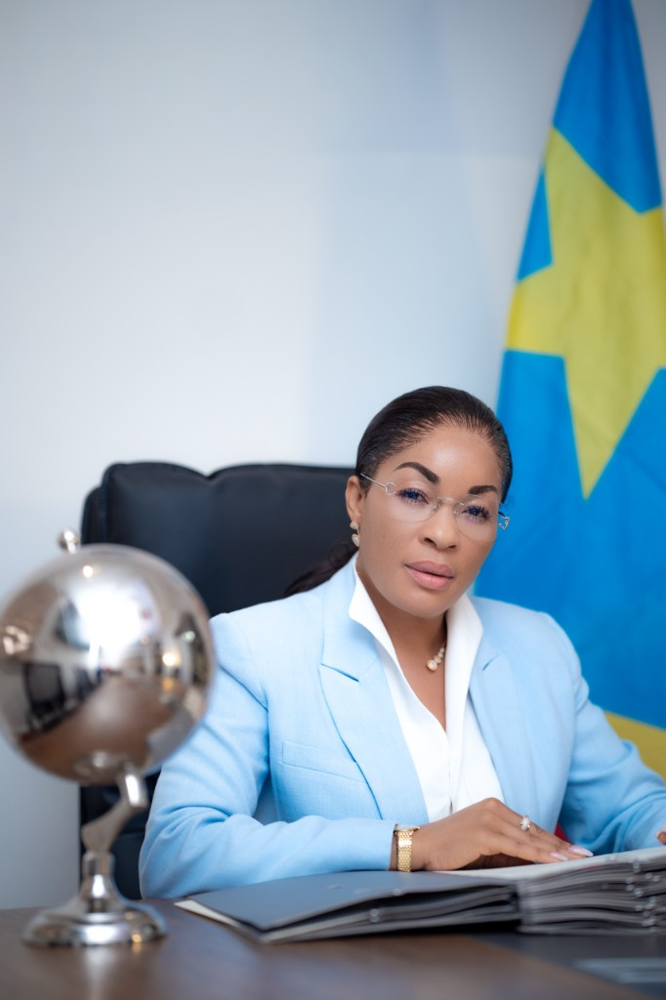

L'édition
Dix années d'absence. L'édition 2026 reprend le flambeau — non comme une répétition, mais comme une renaissance pensée pour la décennie qui s'ouvre.
Contexte
La vision du Chef de l'État fait du tourisme et de l'image du pays un levier de diversification. À l'issue du Sommet Émirats–Afrique pour les investissements touristiques (Dubaï, octobre 2025), 1,882 milliard de dollars de projets ont été alignés pour la RDC.
Dans le même temps, l'Est demeure éprouvé. Un concours qui réunit trente jeunes femmes de toutes les provinces — y compris celles de l'Est — est un acte de souveraineté culturelle et de cohésion.
Positionnement
L'édition 2026 assume une dimension nouvelle : faire du concours un instrument de soft power et une vitrine du Congo productif. Chaque étape produit des contenus audiovisuels de qualité internationale.
Valorisation, leadership, lutte contre les violences, scolarisation des filles.
26 provinces, 400 terroirs, une seule couronne.
Banque d'images et série documentaire au service des circuits prioritaires.
Immersions économiques — BTP, mines, agriculture, numérique.
L'Atelier Miss RDC : master class, lecture, cinéma, débat.
Objectifs
Élire une Miss RDC et deux dauphines capables de représenter le pays à Miss Monde et Miss Univers 2027.
Réinstaller le concours dans le calendrier national annuel et le paysage audiovisuel.
Une série documentaire et des contenus digitaux donnant à voir un Congo moderne.
Emplois temporaires, filière mode et événementiel, visibilité mesurable pour les partenaires.
Faire de l'événement un moment d'unité nationale, avec une attention pour l'Est.
Gouvernance
Haut patronage de la Première Dame. Pilotage par le Comité national du concours MISS RDC, rattaché au Ministère du Tourisme.
Organe non exécutif. Il veille au bon fonctionnement et rend compte au Gouvernement via le Ministre du Tourisme.
CO-MISS RDC, organe exécutif. Règlement, éthique, castings, shows, médias et partenariats.
| 4 | Délégués ministériels : Tourisme, Jeunesse, Culture, Genre |
| 2 | Délégués de la société civile |
| 2 | Professionnels de la mode et du spectacle |
| 1 | Délégué de l'Office National du Tourisme |
| 1 | Représentant de la province hôte |
À la finale : jury 60 %, public 40 % pour les cinq finalistes ; parmi elles, le jury désigne la Miss et ses dauphines.

La coordination nationale
Coordinatrice nationale du concours Miss RDC
À la tête de la coordination nationale, Véronique Kashala accompagne la mise en œuvre du concours et la mobilisation des acteurs publics et privés autour d'une ambition commune.
La coordination organise les épreuves finales, constitue le jury national, définit les critères de cotation et veille à la bonne gestion de Miss RDC.
Miss RDC porte la voix des femmes de nos 26 provinces — et, à travers elles, l'image d'un Congo confiant, créatif et ouvert au monde.
L'héritage
D'Elizabeth Tavares en 1968 à Andréa Moloto en 2016. Les anciennes Miss seront invitées d'honneur du gala de lancement.